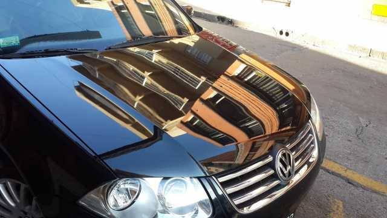

Lavado premiun
Consejos
El pulido de la pintura automotriz.
El mantenimiento de la pintura de su vehículo es muy importante para mantener su brillo y apariencia por mucho tiempo, pero, ¿qué tan a menudo se debe pulir un vehículo?
Lo primero que se debe saber es que el mantenimiento se debe hacer en función de qué tan dañado o descuidado esté la pintura, por tanto si se tiene una relativa periodicidad en el encerado se evitará el recurrir a un proceso de pulido.
